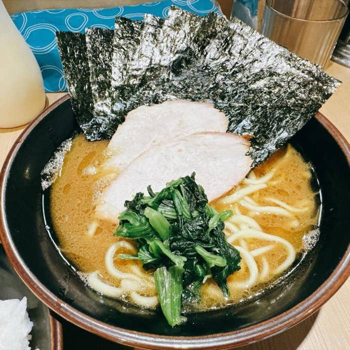
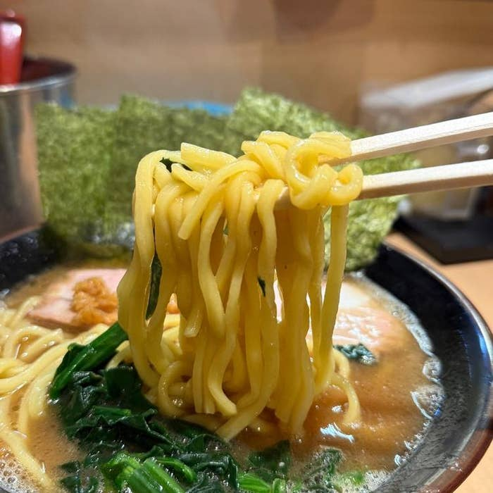

① 浓厚家系・空腹垫肚首推
JR西口徒歩2分 · 现金食券
輝道家直系 皇綱家（きづなや）池袋西口店
📍 東京都豊島区西池袋1-18-1 五光ビル1F ｜ 🕒 11:00–15:45 / 17:30–23:45 (L.O.) ｜ 💴 约 ¥950–¥1,300
野方名店「輝道家」直系×「王道家」特注麺，出餐极快（落座 4 分钟上桌，15 分钟完食），饮酒前垫胃防醉神器。
野方名店「輝道家」直系×「王道家」特注麺，出餐极快（落座 4 分钟上桌，15 分钟完食），饮酒前垫胃防醉神器。



Retty 实名食客 Tsukasa.N：「池袋駅西口からすぐ！輝道家直系の超濃厚豚骨醤油スープに燻製チャーシューの香りが抜群。回転も速くサクッと最高の一杯がキマる。」
Retty 实名食客 T.Satou：「しょう油強めの骨太な家系スープに王道家の短め中太麺が完全マッチ！卓上の無限ニンニクと海苔巻きライスが止まらない中毒性。」
池袋グルメ实测口碑：「晚间18点前半几乎零排队，买完食券5分钟上碗；汤头偏浓建议首次点『味ふつう（普通咸度）』。」